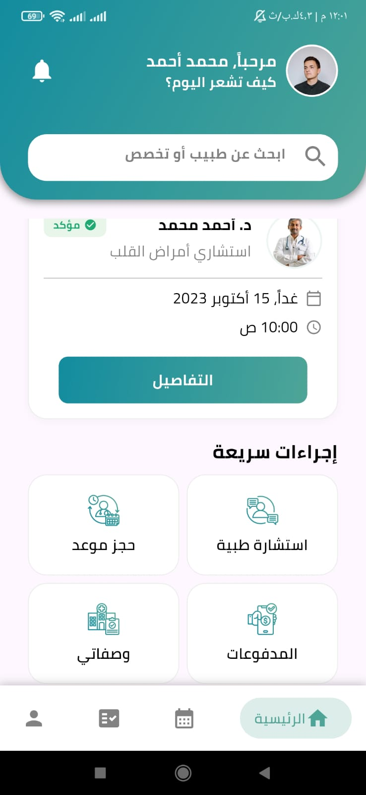
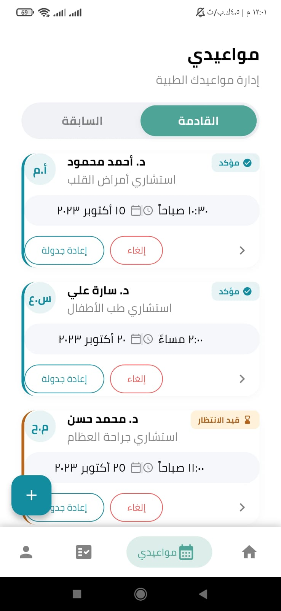
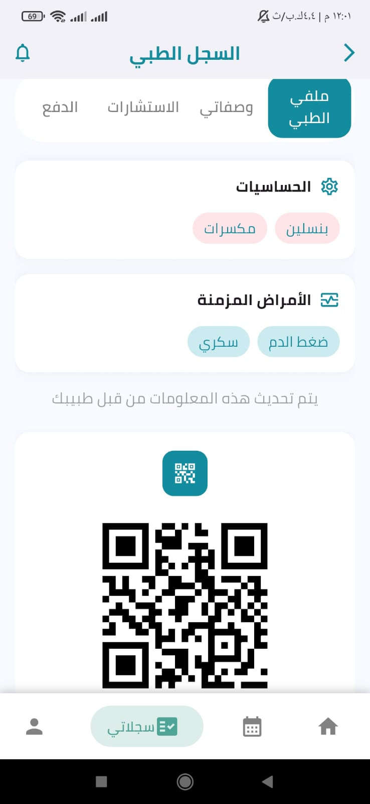

الكفاءات التقنية والتنفيذية خلف "طبيبي"

Front-end Developer


السجل المرضي المفقود والتاريخ الطبي المبعثر
تتجلى المشكلة في قصة واقعية لمحمد، مريض القلب، الذي راجع أحد أطباء العيادات دون أن يمتلك سجلًا مرضيًا أو تاريخًا طبيًا موحدًا. ولم تكن لدى الطبيب خلفية كافية عن أمراض محمد المزمنة، أو حساسياته، أو الأدوية التي يتناولها. ويضع غياب هذه المعلومات الطبيب أمام قرارات غير آمنة وخطة علاج قد لا تكون مناسبة، مما قد يعرّض حياة محمد للخطر ويضطره إلى إعادة فحوصات مكلفة كان من الممكن تجنّبها.
ينتقل المريض بين الأطباء والتخصصات دون سجل طبي واحد يجمعه.
غياب التاريخ المرضي والحساسيات والأدوية قد يعرض المريض لقرار طبي غير آمن.
غياب السجل يجبر المريض على إعادة فحوصات ووصفات مكلفة كانت يمكن تجنّبها.
حل «طبيبي»: سجل صحي موحد عبر الباركود QR
الآن، المريض يملك QR Code خاص به يرافقه أينما ذهب وعلى أي عيادة دخلها. بمجرد أن يمسح الطبيب الباركود من واجهته:
-
يظهر السجل الطبي الموحد فوراًالتاريخ المرضي، الأمراض المزمنة، الحساسية، والزيارات السابقة.
-
يفتح الطبيب زيارة جديدة على الباركودويضيف التشخيص، الوصفة الطبية، والفحوصات.
-
سجل يرافق المريض لأي طبيب مستقبلاًكل معلومة جديدة تصبح جزءاً من تاريخه بشكل دائم.
شاهد كيف يعمل التوثيق الذكي
نحن نعلم أن الطبيب لا يملك الوقت الكافي للكتابة اليدوية أثناء الكشف، لذلك أضفنا خاصية «بدأ الكشف» الصوتية:
-
اضغط «بدأ الكشف» وتحدث طبيعياًيسجّل الطبيب ملاحظاته صوتياً خلال الكشف.
-
الـ AI Agent يحلل حديث الطبيبويفكّكه ذكياً لاستخراج المعلومات الطبية.
-
توزيع تلقائي في مكانه المخصصالأعراض السريرية، التشخيص، الوصفة الدوائية، والتعليمات — دون كتابة يدوية.
- الأعراض السريريةصداع، حرارة متقطعة...
- التشخيصالتهاب الجيوب الأنفية
- الوصفة الدوائيةأموكسيسيلين 500mg · 3x يومياً
- التعليماتراحة كاملة وشرب سوائل
Demo | تطبيق الموبايل



سوق الرعاية الصحية الخاصة الواعد
منطقة غزة وحدها تحتضن 1,200 - 1,500 عيادة خاصة — سوق متنامي بحاجة ماسة للرقمنة